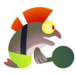
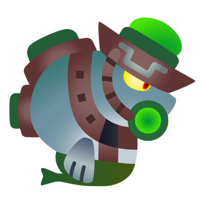
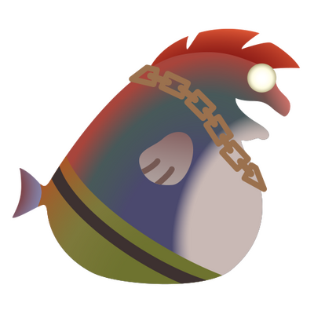

Here at Grizzco Industries, we aim to create a richer, better way of life for everyone in our society
through daily collection of Power Eggs. We're looking for dedicated,
eager workers to assist us as we move forward toward a brighter future. Could that be you?
Collecting Power Eggs can indeed be a risky business, but
when standing shoulder to shoulder in the
thick of the action alongside coworkers united under the same vision
you may see yourself in a different
light—an innovator, a change-bringer, one who rises to all challenges.
Naturally, you will be well rewarded for your efforts. We offer an attractive and competitive
remuneration package to all our employees.
1.1.1 - Collecting Power Eggs
Power Eggs have come to be indispensable in supporting the
modern lifestyles we all enjoy.
Power Eggs can be obtained from creatures called Salmonids.
Working for Grizzco, you'll be responsible for collecting Golden Eggs and depositing them in the
company-issued egg basket. These Golden Eggs are obtained from Boss Salmonids, a far more dangerous
type of Salmonid than the Lesser Salmonid variety.
1.1.2 - Earn Big Bucks—Fast!
Steal the Golden Eggs from the Boss Salmonids!
Take 'em to the egg basket!
And that's it! No, really—that's all there is to it!
If you can remember that, you're ready to join the ranks at Grizzco!
1.1.3 - Joining the Team
As a new employee, you can rest assured in the knowledge that we offer on-site training—you won't be
thrown in at the deep end. After all, no one expects you to memorize everything in your Employee
Handbook right away! At Grizzco, we believe experience is the best teacher.
All you could ever want to know about Salmonids is explained in detail in your Salmonid Field Guide.
1.1.4 - Getting Started
All new Grizzco employees are given a Grizzco Point Card. Please take
good care of this card—it is used
to commemorate your professional achievements.
Power Egg collection is done when Salmonids engage in a
behavior called a "Salmon Run". This is the Salmonid habit of
regularly returning in large
numbers to the area where they were spawned.
Because our business NEVER closes here in the Splatlands, we always have a need for more help collecting
Power Eggs. However, where our employees collect those
eggs will differ based on the time of day.
All equipment necessary for collecting Power Eggs
(weapons, gear, life ring) will be provided by the company. There is no need for employees to prepare
anything themselves, so first-timers needn't worry.
This job requires the use of specially optimized equipment well-suited to the task at hand. This means
that workers will be unable to charge their special gauges themselves.
Instead, Grizzco will arrange for two uses of a special ability, which
you may activate when you deem necessary. Unused special-ability activations are reclaimed at the end of
your shift.
1.1.5 - All in a Day's Work
You'll start your working day by boarding one of our chartered helicopters and departing for the
restricted zone. Be aware that once your helicopter departs, there's
no turning back. You won't be able to
return until your shift is over.
Upon arriving at the job site, company-issued weapons will be
distributed to each employee. After you've
received your weaponry, all you have to do is wait for Boss Salmonids to appear.
You will receive a radio alert when Boss Salmonids are detected in the vicinity. It is not possible to
provide precise coordinates, so it's up to you to find the exact location of the Boss Salmonids.
The restricted zone is subject to a mysterious magnetic field known to have an effect on Inkling and
Octoling sensory
organs. You will be unable to use the Turf Map to check your surroundings or to perform Super Jumps.
You'll have to rely on good, old-fashioned eyesight to explore your
surroundings.
Unfortunately, Boss Salmonids are not the only enemy you'll have to contend with. Lesser Salmonids will
also interfere with your work, and will need to be dealt with in a suitable fashion. However, be aware
that the Power Eggs dropped by Lesser Salmonids are far
less valuable than the Golden Eggs dropped by
Boss Salmonids. Therefore, we ask all employees to prioritize the collection
of Golden Eggs over Power Eggs.
The Salmonids' sensory organs have adapted to the contaminants in their habitat, so they will not be
hampered in hunting down Inklings and Octolings. Be very careful—you won't be able to hide yourself in
ink.
1.1.6 - Forming Bonds through Cooperation
Facing off against a Boss Salmonid on your own is a tall order. If you find yourself confronted with
one, use your "This way!" signal to call for help. This will
communicate your position wirelessly to your coworkers.
Carrying the Golden Eggs dropped by Boss Salmonids also
requires the cooperation of the whole team, as
the equipment provided allowed each worker to carry only 1 Golden Egg at a time.
In the event that you are splatted by a Salmonid, you'll wind up in a life ring, rendering you out of
action. To rejoin the fray, you must wait for 1 of your coworkers to revive
you with some of their ink.
While in a life ring, your "This way!" signal will automatically change to a distress call. Use this to let your coworkers know that you're in a bind
so they'll come and revive you as soon as possible.
If you approach the egg basket while holding a Golden
Egg, you can press A to deposit it.
If you're not near the egg basket, you can press A to throw a Golden Egg. Use this to deposit eggs from far
away, pass them to your coworkers, or put them in places where they're easy to retrieve. While throwing
Golden Eggs is an efficient method of transport,
please bear in mind that doing so expends ink, so plan accordingly.
1.1.7 - Your Quota
In order to promote effective Power Egg collection, all
teams have a Golden Egg
quota.
The Salmonids exhibit very predictable behavior. They will react aggressively to intruders into their
territory, but will return to the water after a set amount of time. Teams that successfully meet their
quota within that time period will be given a new quota to fill.
This onslaught and retreat of Salmonids is called a wave. The deadline
to meet your quota is at the end of each wave, after which it will not be possible to deposit more eggs
in the basket.
Subsequently, all employees will be Super Jumped to the spawn point using special Grizzco technology,
where they will be supplied with fresh weapons and splatted workers will be
revived.
Your shift is over at the end of the third wave.
Unfortunately, in the event that your team is unable to meet its
quota, we will have no choice but to terminate your shift
early.
Additionally, if your entire work crew is splatted by Salmonids and wiped out
during a wave, we will again have no choice but to terminate your
shift early.
1.1.8 - King Salmonids
In the Splatlands, there have been several reports of King Salmonid
sightings. King Salmonids are larger and more dangerous than Boss Salmonids.
It's said that King Salmonids will gradually learn your scent and will
appear to chase away intruders that come back over and over again.
If a King Salmonid shows up, we'll waive your Golden
Egg quota. Instead, we ask that you stay calm and
focus on driving back the King Salmonid.
If a King Salmonid appears, we'll supply you with an egg cannon that
turns Golden Eggs into special shots that you can fire
with A. These shots won't consume ink, so don't
be shy about using them on the King Salmonid.
When a King Salmonid appears, all leftover special pouches will be collected and then redistributed so
everyone gets one. This rule ensures the most efficient use of limited resources.
You can obtain durable fish scales from the bodies of King Salmonids. These are a very precious
resource!
In exchange for fish scales, we will provide a variety of limited-edition
goods, so you should absolutely try to collect as many as you can.
1.1.9 - Your Bonus
When your shift ends, you'll be awarded Grizzco Points based on the
number of Golden and Power Eggs you and your coworkers have collected. After you have earned a set number
of points, you will receive a fabulous bonus, so make sure you work
your very hardest to rack up those points!
You can claim your bonuses from the exchange desk inside Grizzco
Industries.
The bonus lineup changes with each recruitment drive, and your Grizzco Points are also reset at the end of each drive.
1.2.0 - Pay Grade
Grizzco uses an employee-rating system to help workers progress along their chosen career path.
Your pay grade increases when you meet your quotas for all three
waves.
In the event that you are unable to meet your quotas, your pay grade will not be increased—and may even
be decreased.
As your pay grade increases, you'll be given a suitable title to
match.
Raising your pay grade and getting new titles results in increased
bonuses, but even better than that, it gives you the warm glowy feeling of overcoming a
challenge!
And don't worry! Although your pay grade will be reset for each new hiring period, you'll get to keep
your title.
1.2.1 - Evaluation Criteria
Accomplishments: Results at Work
Practical Skills: Judgement, Preparedness, Consideration, Initiative, Communication